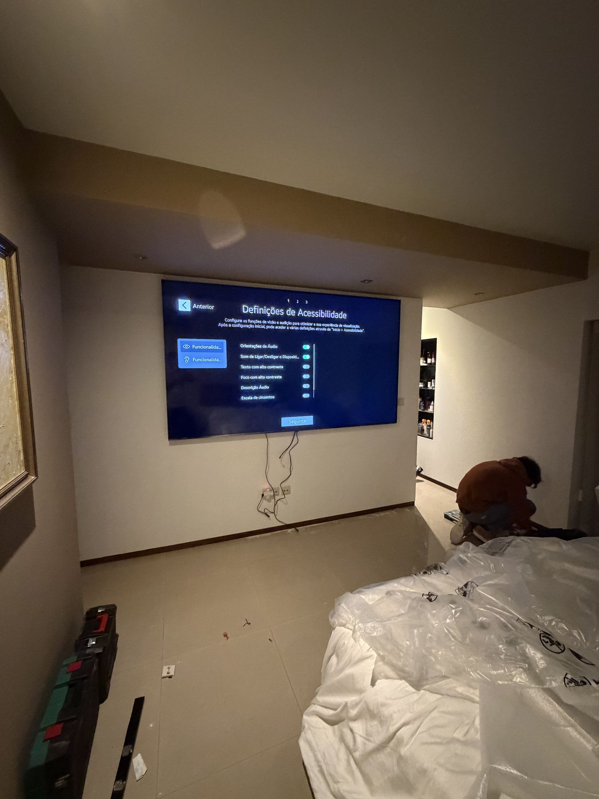

Quem faz
o trabalho
A Dizarro nasceu em Padrão da Légua, Matosinhos, para responder a uma coisa simples: trabalho técnico bem feito, à hora combinada, com quem atende o telefone a seguir.
Sete anos, mais de 150 obras, um raio de 100 km à volta do Porto.
Começámos com pequenas reparações elétricas e fomos crescendo por indicação — cliente que recomenda a cliente. Pelo caminho juntámos a montagem de móveis, as redes e a pintura, porque eram sempre as mesmas casas a precisar de tudo.
Hoje a Dizarro coordena a parte técnica de uma obra de fio a pavio: o eletricista sabe onde o carpinteiro vai pôr o móvel, e o técnico de redes sabe por onde passa o cabo antes de a parede fechar.
Como gostamos de trabalhar
Reconhecimento
Somos Especialista Destacado na plataforma Fixando, com avaliação de 5 estrelas dos clientes que nos contrataram por lá — o mesmo padrão que aplicamos a quem chega pelo site ou por indicação.
